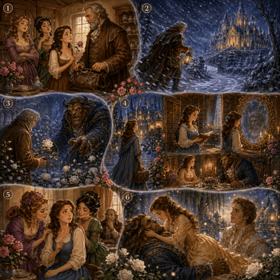

Análisis
Inicio y Estructura
Inicio y Estructura:
El relato comienza con la fórmula tradicional “Había una vez”, típica del cuento maravilloso. El inicio nace principalmente de una descripción: se presenta al mercader, su riqueza, sus hijos, la belleza de Bella y el contraste moral entre ella y sus hermanas. Esta apertura ubica al lector en un mundo lejano, atemporal y mágico.
Después de esa presentación, la acción se activa con una ruptura: el mercader pierde sus bienes. A partir de allí, la estructura sigue una organización clara: situación inicial de riqueza, pérdida de la fortuna, vida en el campo, viaje al puerto, tormenta y llegada al palacio, conflicto por la rosa, sacrificio de Bella, convivencia con la Bestia, regreso a la casa paterna, demora provocada por las hermanas, sueño revelador, regreso al palacio y transformación final.
El orden general es cronológico, con marcas temporales claras: “había una vez”, “ni bien”, “así pasaron los meses”, “un buen día”, “al despertarse a la mañana siguiente”, “esa noche”, “tres apacibles meses”, “dentro de ocho días”, “la décima noche”. Hay algunos recursos maravillosos que alteran la percepción del tiempo y el espacio, como el espejo y los sueños, pero no rompen la organización principal. Al final aparece una explicación retrospectiva: el príncipe cuenta que un hada maligna lo había convertido en Bestia.
Voz narrativa
Voz Narrativa:
El relato está narrado por un narrador externo omnisciente, en tercera persona. No participa de los hechos, pero conoce lo que los personajes sienten, piensan y desean: sabe que Bella es bondadosa, que las hermanas la envidian, que el mercader está lleno de pena, que la Bestia sufre y que Bella empieza a quererlo. Su ángulo de visión es amplio: puede mostrar la casa familiar, el viaje del mercader, el palacio, los sueños de Bella, el espejo mágico y el desenlace del hechizo. Esta voz narrativa genera un efecto propio del cuento maravilloso: guía al lector con claridad moral, diferenciando la bondad, la envidia, el sacrificio y la apariencia engañosa. A la vez, en algunas escenas limita momentáneamente la información para crear misterio, como cuando el mercader llega al palacio vacío y no sabe quién lo atiende.
Construcción del Personaje
Construcción del Personaje:
Los personajes aparecen construidos como figuras representativas de valores y defectos humanos, algo frecuente en los cuentos maravillosos.
Bella es la protagonista. Su nombre destaca su hermosura, pero el relato desplaza la atención hacia su belleza moral: es trabajadora, dulce, honesta, lectora, sensible y capaz de sacrificarse por su padre. Se la conoce por lo que hace —limpia, cocina, trabaja, lee, toca el clavicordio, acompaña a su padre, vuelve al palacio—, por lo que dice —no miente cuando reconoce que la Bestia es fea, pero afirma que es buena— y por lo que piensa —comprende que el corazón de la Bestia importa más que su aspecto. Su evolución hace avanzar la trama: pasa del miedo a la compasión, de la compasión al afecto y del afecto al amor.
La Bestia / el príncipe cumple una doble función. Al comienzo parece antagonista: es horrendo, ruge, amenaza al mercader y exige una vida a cambio de la rosa. Sin embargo, sus acciones revelan otra identidad: ofrece refugio, comida, ropa, una habitación para Bella, libros, música, libertad para visitar a su padre y una sortija mágica para regresar. Su nombre, “Bestia”, lo define por la apariencia exterior, pero sus palabras y actos muestran un corazón bondadoso. La transformación final en príncipe confirma el tema central del cuento: no hay que juzgar por la apariencia.
El mercader / padre es un personaje desencadenante. Su pérdida de fortuna obliga a la familia a cambiar de vida; su viaje al puerto abre la posibilidad de recuperar la riqueza; su extravío en la tormenta lo lleva al palacio; y el corte de la rosa provoca el conflicto principal. Es presentado como un buen padre: se preocupa por sus hijos, sufre por Bella y quiere sacrificarse en su lugar.
Las dos hermanas mayores funcionan como antagonistas morales. Son ambiciosas, superficiales, envidiosas y crueles. Se construyen por contraste con Bella: mientras ella trabaja y acepta la pobreza con humildad, ellas se lamentan, se burlan y desean volver a la vida de lujo. Sus pedidos —vestidos, chalinas y peinetas— revelan vanidad. Más adelante, cuando Bella vuelve feliz y vestida como princesa, planean retenerla para que la Bestia crea que rompió su promesa. Su castigo final como estatuas muestra la consecuencia de su malicia.
Los tres hermanos varones son personajes secundarios positivos. No tienen nombres propios ni gran desarrollo individual, pero representan la lealtad familiar y el impulso protector: quieren ir a matar a la Bestia para salvar a Bella. Su función es mostrar que la familia también reacciona con amor, aunque no pueda resolver el conflicto mágico.
El hada hermosa aparece primero en el sueño de Bella y luego al final. Cumple el rol de ayudante y jueza moral: anticipa que Bella recibirá recompensa por salvar a su padre y, al final, explica el sentido ético de la historia. Premia a Bella por elegir la bondad antes que la belleza y castiga a las hermanas por su envidia.
El hada maligna no aparece en escena, pero es fundamental porque originó el hechizo que convirtió al príncipe en Bestia. Funciona como causa anterior del conflicto maravilloso.
Los lobos no actúan directamente, pero intensifican el peligro del bosque. Sus aullidos aumentan el miedo del mercader y hacen que el palacio aparezca como posible salvación.
Los sirvientes o el dueño de la casa son personajes ausentes o imaginados. El mercader espera encontrarlos en el palacio, pero no aparecen. Esa ausencia aumenta el misterio del lugar encantado.
Climas y Percepciones Sensoriales
Climas y Percepciones Sensoriales:
El cuento trabaja varios escenarios y cada uno produce un clima diferente.
La ciudad aparece asociada al pasado de riqueza, fiestas y teatros. Es un espacio de lujo perdido, especialmente valorado por las hermanas mayores. La casa de campo o pequeña granja representa la caída social, pero también el trabajo honesto. Allí predominan acciones cotidianas: labrar la tierra, limpiar, cocinar, leer, tocar el clavicordio y cantar. El clima es humilde, laborioso y familiar.
El puerto funciona como escenario de expectativa frustrada. Allí el mercader espera recuperar sus mercancías, pero descubre que no podrá hacerlo. Es un espacio de fracaso económico y de inicio del regreso doloroso.
El camino, la tormenta de nieve y viento, y el gran bosque construyen un clima de amenaza. Hay percepciones visuales: nieve, noche, largas hileras de árboles, una luz brillante a lo lejos. Hay percepciones auditivas: viento, aullidos de lobos, estruendos. Hay percepciones táctiles y térmicas: frío, hambre, caída del caballo, sensación de peligro físico. La tormenta vuelve vulnerable al mercader y prepara la entrada al mundo mágico.
El palacio o castillo tiene un clima ambiguo: es refugio y amenaza a la vez. Primero parece protector: patios abiertos, establo con heno y avena, chimenea, cena servida, cama, ropa nueva y chocolate caliente. Allí aparecen sensaciones táctiles de calor frente al frío exterior y sensaciones gustativas vinculadas con la comida y el chocolate. Pero el hecho de que no haya nadie visible genera misterio. El lugar parece habitado por fuerzas invisibles.
El jardín del palacio, con rosas blancas y flores, contrasta con la tormenta. Visualmente es luminoso, bello y abundante. Sin embargo, también allí se produce la amenaza: cuando el mercader corta la rosa, aparece la Bestia. Más adelante, el jardín junto al estanque será el escenario del desenlace amoroso y de la transformación.
El gran salón es el espacio de los encuentros formales: allí se come, aparece la Bestia, Bella conversa con él y al final se reúne la familia. Funciona como escenario de prueba, diálogo y revelación. El dormitorio de Bella, la biblioteca, el clavicordio, los libros y las partituras crean un clima íntimo, refinado y protector: el palacio no solo encierra a Bella, también le ofrece aquello que la hace feliz.
El espejo mágico abre un escenario dentro del escenario: permite ver la casa del padre desde el palacio. Es un recurso visual maravilloso que une espacios lejanos y muestra simultáneamente lo que ocurre fuera del castillo.
La casa del padre, cuando Bella regresa, mezcla alegría, enfermedad y engaño. Allí el padre se recupera al verla, pero las hermanas usan el cariño fingido para retenerla. Finalmente, el jardín con la Bestia inmóvil junto al estanque crea un clima de angustia y pérdida, que se transforma de inmediato en un clima luminoso con luces resplandecientes, fuegos artificiales y la aparición del príncipe.
Recursos de Cohesión
Recursos de Cohesión:
El texto usa muchas estrategias para evitar repeticiones y mantener la unidad del relato. Hay referencias pronominales como “ella”, “él”, “lo”, “la”, “le”, “sus”, que retoman personajes ya mencionados. Por ejemplo, Bella puede ser nombrada como “Bella”, “la joven”, “hijita”, “hermana”, “ella”; el mercader como “el padre”, “el buen hombre”, “tu desventurado padre”; y la Bestia como “la Bestia”, “el monstruo”, “el pobre monstruo”, “príncipe”.
Los conectores temporales ordenan la secuencia narrativa: “hace mucho tiempo”, “ni bien”, “cuando”, “luego”, “al despertarse”, “enseguida”, “por la mañana”, “poco después”, “todas las tardes”, “los días siguientes”. Los conectores lógicos explican causas, contrastes y consecuencias: “pero”, “por eso”, “en cambio”, “pues”, “ya que”, “sin embargo”, “aunque”, “entonces”. Estos conectores ayudan a comprender por qué los personajes actúan y qué consecuencias tienen sus decisiones.
También hay elipsis, especialmente de sujetos ya conocidos: en muchas oraciones no se repite “el mercader” o “Bella” porque el contexto permite entender quién realiza la acción. La cohesión léxica se organiza en campos semánticos muy claros: riqueza y pobreza; familia y sacrificio; magia y hechizo; palacio, lujo y nobleza; fealdad y belleza; miedo, compasión y amor.
Gramática y Verbos del Decir
Gramática y Verbos del Decir:
El cuento combina dos tiempos verbales fundamentales de la narración. El Pretérito Imperfecto se usa para describir marcos, costumbres y estados: “tenía”, “eran”, “era”, “hablaba”, “se aburrían”, “nevaba”, “había”, “estaba”. Este tiempo construye el telón de fondo: cómo era la familia, cómo vivían, cómo era el clima, cómo se sentían los personajes.
El Pretérito Perfecto Simple se usa para las acciones principales que hacen avanzar la historia: “perdió”, “anunció”, “recibió”, “partió”, “llegó”, “supo”, “se perdió”, “vio”, “entró”, “cortó”, “rugió”, “juró”, “regresó”, “contó”, “partieron”, “despertó”, “prometió”. Este tiempo marca los núcleos narrativos.
Aparece también el Pretérito Pluscuamperfecto para señalar acciones anteriores a otras: “había llegado”, “había cortado”, “había visto”, “había perdido”. En los diálogos se usan futuros, imperativos y promesas: “morirás”, “regresarás”, “prometo regresar”, “disponga, ordene”, lo que intensifica amenazas, deseos y compromisos.
Los verbos del decir son variados y expresivos: preguntó, respondió, dijo, rugió, suplicó, gritaban, anunciaba/anunció, agregó, se lamentó, pensó, prometió. No todos tienen el mismo efecto: “rugió” animaliza a la Bestia y refuerza su aspecto amenazante; “suplicó” muestra el miedo del mercader; “gritaban” revela la furia de las hermanas; “respondió temblando” muestra el temor de Bella; “se lamentó” permite escuchar su tristeza; “pensó” abre su mundo interior.
Puntuación y Normativa
Puntuación y Normativa:
El texto usa adecuadamente la raya de diálogo para introducir las voces de los personajes. Cada intervención aparece separada y esto facilita reconocer quién habla. Los incisos del narrador —por ejemplo, “dijo Bella”, “respondió ella”, “rugió la Bestia”— permiten identificar al hablante y agregar información sobre tono, emoción o gesto.
Los dos puntos se usan para anunciar palabras textuales o inscripciones, como cuando aparece escrito en el libro mágico. También se emplean comillas para pensamientos de Bella y para frases escritas, diferenciando la voz interior o el texto dentro del texto. Los signos de interrogación y exclamación intensifican preguntas, miedo, sorpresa, dolor y órdenes.
La organización en párrafos acompaña los cambios de escena y de episodio: presentación familiar, viaje, tormenta, llegada al palacio, pacto, regreso a la granja, vida de Bella en el castillo, visita al padre y desenlace. Cada párrafo funciona como una unidad de significación y ayuda a seguir la progresión del cuento.
Campos semánticos
Tres campos semánticos
1. Riqueza y pobreza
mercader rico, bienes, fortuna, mercancías, riquezas, vestidos, chalinas, peinetas, fiestas, teatros, pobres, casa de campo, campesinos, trabajar, granja.
2. Naturaleza, clima y peligro
tormenta, nieve, viento, bosque, árboles, noche, frío, lobos, aullidos, caballo, rosas, jardín, flores.
3. Mundo maravilloso o mágico
príncipes, princesas, magia, hechizos, hada, palacio, Bestia, monstruo, espejo mágico, sortija, transformación.
Contenidos
- Lectura de cuentos maravillosos: hechizos, transformaciones, objetos mágicos, hadas, pruebas y final reparador.
- Reconocimiento de estructura narrativa: situación inicial, conflicto, desarrollo y desenlace.
- Identificación del narrador externo omnisciente y del punto de vista.
- Caracterización de personajes a partir de acciones, palabras, pensamientos, nombres y descripciones.
- Análisis de escenarios y climas narrativos mediante vocabulario sensorial.
- Uso de conectores temporales y lógicos para ordenar los hechos.
- Recursos de cohesión: pronombres, sustituciones, elipsis y campos semánticos.
- Uso narrativo del Pretérito Perfecto Simple y del Pretérito Imperfecto.
- Reconocimiento y producción de diálogos con raya, incisos y verbos del decir.
- Revisión de puntuación, mayúsculas en nombres propios y títulos, organización en párrafos y adecuación del vocabulario al género maravilloso.

Escritura
Describir un escenario
1. Situación de escritura: Describir un escenario
Consigna:
Imaginá que sos el mercader cuando llega al bosque durante la tormenta. Escribí una descripción del lugar antes de que aparezca la luz del palacio.
En tu texto tenés que incluir:
- Qué se ve: árboles, nieve, oscuridad, camino, luz lejana.
- Qué se escucha: viento, aullidos, ruidos del bosque.
- Qué se siente en el cuerpo: frío, miedo, cansancio, hambre.
- Al menos cinco adjetivos para crear clima de peligro o misterio.
Inicio posible:
“El bosque estaba…”
Escribir un diálogo
2. Situación de escritura: Escribir un diálogo
Consigna:
Escribí un diálogo entre Bella y la Bestia durante una cena en el castillo. La Bestia quiere saber si Bella le tiene miedo, y Bella responde con sinceridad.
En tu texto tenés que incluir:
- Raya de diálogo al comienzo de cada intervención.
- Al menos cuatro intervenciones de cada personaje.
- Verbos del decir, como: dijo, preguntó, respondió, susurró, exclamó.
- Alguna acción breve entre los diálogos.
Inicio posible:
—Bella, ¿todavía me temes? —preguntó la Bestia.
Narrar un recorrido
3. Situación de escritura: Narrar el recorrido de los hechos con conectores
Consigna:
Escribí un texto breve contando el recorrido del mercader desde que sale de su casa hasta que vuelve con la noticia de la Bestia.
Usá conectores para ordenar los hechos:
primero – luego – después – más tarde – mientras tanto – entonces – finalmente
En tu texto tenés que contar:
- El viaje al puerto.
- La pérdida de la esperanza de recuperar la fortuna.
- La tormenta en el bosque.
- La llegada al palacio.
- El corte de la rosa.
- El encuentro con la Bestia.
- El regreso a la casa familiar.
Inicio posible:
“Primero, el mercader salió de su casa con la esperanza de recuperar sus mercancías…”